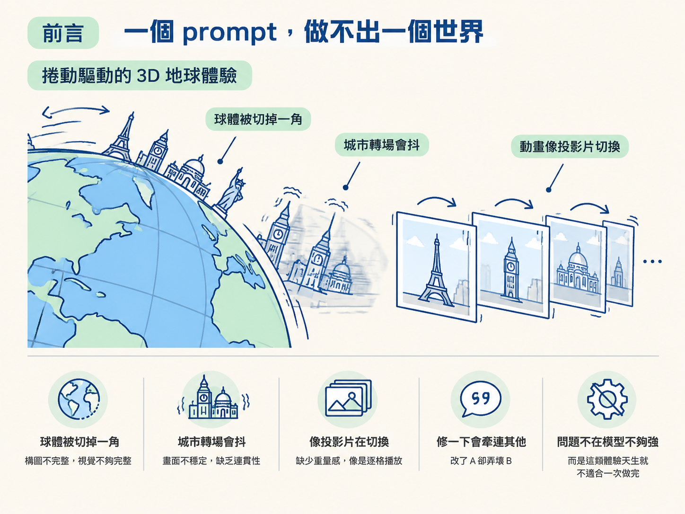
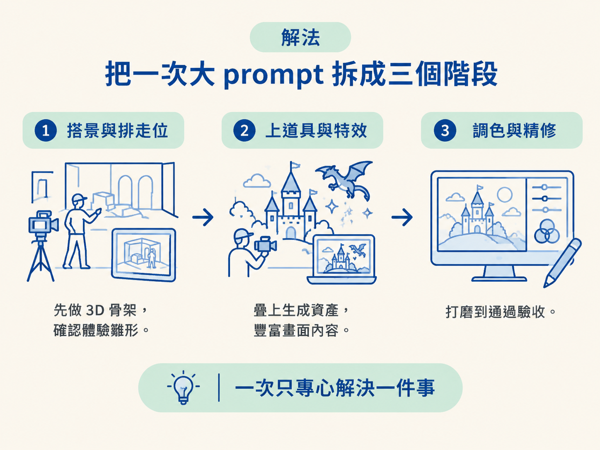

能說出為什麼高複雜度的 3D／動畫體驗要拆成階段來做，並講出三個階段各自的目標。
你想做一個會讓人「哇」一聲的網頁。不是那種上下堆疊的卡片式落地頁，而是一整顆持續轉動的地球：你往下捲，城市一座一座接力登場，太陽沿著一條弧線走過一整天、一整年。這種東西看起來就是一個 prompt 可以交辦的事，於是你在對話框裡打了一段需求，按下送出，期待它一次到位。
結果通常很掃興。第一版能跑，但球會被切掉一角，城市轉場會抖，動畫像投影片在切換，而不像有重量的物體在移動。你再補一句「修一下」，它改了 A 卻弄壞 B。問題不在模型不夠強，而在這類體驗天生就不適合一次做完。

這一節要講的就是兩件事：為什麼要把它拆開，以及拆開之後每一段各自要達成什麼。
先承認一件事：像捲動驅動的 3D、複雜的 CSS 動畫、多層次的互動，即使你是 CSS 專家，手刻也會花掉非常長的時間。Codex 的價值就在這裡：它能替你生出那些 3D 物件與互動，讓你把力氣放回「想做什麼」，而不是「怎麼手刻」。
但「生得出來」和「動得對」是兩回事。動畫要對，得同時滿足很多條件：轉場要順；不同螢幕寬度都不能把主角切掉；往回捲要和往前捲走同一條路徑。生成資產更難，例如城市地標的點陣圖，它得算清楚每個物件要怎麼繞著地球從背面走到正面、什麼時候該藏在球後面。
這些條件只要漏掉一項，成果就會「差那麼一點」。而這種「差一點」最麻煩的地方在於：它往往不是再補一句話就能修好的，因為你不知道是哪一個環節壞掉。
講者的做法，是把整個體驗拆成三個先後有序的階段，每一階段只專心解決一個問題。你可以把它想成拍一部電影：先搭景與排走位，再上道具與特效，最後才是調色與精修。一次把三件事混在一起，出了問題你分不清是哪一段壞掉。

| 階段 | 目標 | 做完的判準 |
|---|---|---|
| 1. 初始體驗 | 只做 3D 骨架，先確認整個體驗「雛形是對的」 | 能捲動、球不破、城市會轉場 |
| 2. 生成資產 | 把生成的地標圖疊到既有的 3D 物件上，用針對性迭代 | 資產正確出現，但動畫還很粗糙 |
| 3. 打磨 | 交給 goal 長時間自走，反覆修到真的好看 | 在多種 viewport 都通過驗收清單 |
第一階段只做 3D：先讓整體結構站得住，你才能確定「這個體驗的方向是對的」。方向錯了就早點停，不要等貼滿資產才發現骨架是歪的。
第二階段才把生成的 sprites 疊上去。刻意分成兩次，是為了能用「針對性的順序」一步步加東西。每次只變一件事，你才看得出變化從哪來；這也是為什麼這一階段的迭代可以很窄、很快。
第三階段最花時間，也最需要耐心。動畫很難一次抓準，加了生成資產之後又更難。所以這時候要用 goal 讓 Codex 鎖定目標、一遍又一遍地修，直到它自己驗收通過。
這裡有個實用的附帶技巧：換城市、換資產，是探索變化的捷徑。同一個 prompt 骨架，只要把城市名單和要生成的資產換掉，就能快速變出另一個版本，不必從零重寫。
拆階段等於要讓 Codex 跑很久，跑很久就會一直跳出「要不要允許執行這個指令」。如果每個指令都要你點頭，你就得全程盯著畫面，這反而破壞了把工作交出去的意義。所以講者建議把 permission 設成 approve for me。
它的運作方式是：Codex 會另外開一個執行緒，專門判斷某個指令安不安全；安全的就自動放行，有疑慮的才問你。這比「什麼都問」有效率，也比 full access 安全。full access 會讓它在完全不問你的情況下做任何事，例如刪掉一個資料夾，而那正是你不希望沒被告知就發生的事。如果你想要更可預期的行為，也可以自己設定 custom permissions，只是它的彈性換來的是你得自己維護規則。
另一個配套是 pets：一個懸浮的小寵物視窗，讓你在切到別的分頁做別的事時，還能一眼看到目前有幾個對話在跑、哪一個正在等你批准、哪一個已經完成。當你同時開著好幾個對話並行推進不同階段，這個小視窗能省下你反覆切換的成本。
高複雜度的 3D／動畫體驗不要一次做完，因為「動得對」牽涉太多條件，一次到位幾乎不可能。拆成三階段：先用 3D 骨架確認方向，再針對性地疊上生成資產，最後用 goal 反覆打磨到通過驗收。要跑長工，先把 permission 設成 approve for me，再用 pets 盯著多個對話。
這三階段的拆法，背後是一條通用原則：一次只驗證一件事，才看得出變化從哪來。知道要拆階段之後，下一步就是動手寫第一階段那則 prompt。它會是你寫過數一數二長的 prompt，但它有固定的段落骨架可以照抄。下一節就把它拆給你看。